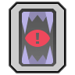

Beginner Tips
Stepping out onto 惑星ミラ for the first time puts you in a massive world where high-level wildlife roams beside starter paths and dozens of menu systems unlock in quick succession. Building a few smart habits in your opening hours spares you unnecessary backtracking, keeps your Battle Points flowing to every companion, and makes both exploration and early combat feel natural right away.
Early Setup
Knock out these five quick adjustments as soon as you reach NLA during Chapters 1 through 3. Taking two minutes to set up cosmetic armor, camera zoom, your first アームズカンパニー investment, and starter Art upgrades pays off across every fight that follows.
- Enable ファッション装備 in the Equipment menu so stat upgrades keep your chosen appearance.
- Test the overhead Aerial Cam in settings and press L + R for clean map screenshots.
- Invest your first
 ミラニウム tick at the AM Terminal into
ミラニウム tick at the AM Terminal into  サクラバ重工.
サクラバ重工. - Upgrade
 アサルトハンマー and
アサルトハンマー and  ファイアグレネード to Lv. 3.
ファイアグレネード to Lv. 3. - Plant データプローブ on every reachable FNスポット across 原初の荒野.
Exploration
How you travel across 惑星ミラ shapes how quickly your party grows stronger. Recruiting teammates early, activating probe beams on sight, rotating classes as soon as one maxes out, and reading enemy aggro icons let you cross dangerous regions safely while earning steady passive rewards.
Companions earn exploration バトルポイント once they join your roster. Complete character recruitment  キズナクエスト as each chapter unlocks them before mass-registering コレペディア entries or opening field
キズナクエスト as each chapter unlocks them before mass-registering コレペディア entries or opening field  トレジャーボックス.
トレジャーボックス.
Reserve members gain EXP alongside Cross within a two-level margin, and newly recruited companions scale up to match Cross.
Every reachable FNスポット accepts a probe immediately from Chapter 1 with zero Field Skill gates.
Expanding フロンティアネット unlocks fast travel, raises Mira 開拓率, grants milestone bundles of  マテリアルチケット, and produces passive
マテリアルチケット, and produces passive  Credits and
Credits and  ミラニウム.
ミラニウム.
Press ZL on the アーツセット or スキルセット screen to refund spent BP for a small  Credits fee. Raise active abilities to Lv. 3 first, push core multipliers to Lv. 5, and reclaim points whenever changing weapons.
Credits fee. Raise active abilities to Lv. 3 first, push core multipliers to Lv. 5, and reclaim points whenever changing weapons.
Switch to the next class branch as soon as your active class hits Rank 10. Follow the class sequence in Cross Build.
Mira places Lv. 60+ 
- Sight triggers inside the front vision cone. Walk behind the target to pass safely.
- Sound triggers on nearby running footsteps, combat, or Skell movement.
- Kindred calls nearby members of the same species into combat.
- Unmarked enemies stay passive until struck directly or hit by area Arts.
Combat
Battles reward rhythm and positioning much more than firing every Art the instant it lights up. Waiting for Secondary Cooldown rings, answering teammate callouts for free healing, and targeting specific body parts will carry you cleanly through story bosses that punish button mashing.
- 部位ロック. Hold R to target an enemy, cycle body parts, and click the Right Stick to lock onto an appendage. Early in the game, breaking appendages disables enemy attacks and drops part materials. Later, locking onto intact appendages triggers
 パーツクラッシャー with
パーツクラッシャー with  インサイドブレイカー.
インサイドブレイカー. - クイックリキャスト. Press Y on a cooling-down Art to spend the green energy gauge and fire immediately. Save energy for
 ゴーストウォーカー recasts and
ゴーストウォーカー recasts and  O.C.ギア chain extensions. The gauge refills automatically after battle.
O.C.ギア chain extensions. The gauge refills automatically after battle. - ダブル・トリプルリキャスト. Holding the matching weapon after an Art's primary icon fills charges a green outer ring and white outer ring for +250% to +400% damage, bonus hits, or faster buff recasts.
- Positional Indicator. Art icons display an indicator whenever positional or
 オーラ bonus conditions are active. Move until the indicator lights up before executing the Art.
オーラ bonus conditions are active. Move until the indicator lights up before executing the Art. - ソウルボイス. Pressing a flashing palette Art when a teammate calls out a colored prompt heals both characters and applies combat buffs. Hitting the circular Soul Challenge ring grants TP.
- Pause Menu Shortcuts. Swap party members, change the clock, place up to 200 map markers, and toggle the ナビゲーションボール directly from the field menu.
Key Systems & Switch 2
Several progression rules were streamlined from the original release, including how field treasure unlocks, how  マテリアルチケット accumulate offline, and how ドール handle jumping once flight is installed. Keep these updated rules in mind as you move into the mid-game.
マテリアルチケット accumulate offline, and how ドール handle jumping once flight is installed. Keep these updated rules in mind as you move into the mid-game.
- Field Skills. High-tier
 トレジャーボックス open after clearing the three シークレットオーダー missions for メカニカル, バイオロジカル, and サーチ.
トレジャーボックス open after clearing the three シークレットオーダー missions for メカニカル, バイオロジカル, and サーチ. - Level Cap & Overdrive. Character levels cap at 99, base O.C.ギア lasts 25 seconds, and activating Overdrive fires an AoE shockwave.
- Tickets & Blueprints.
 マテリアルチケット cap at 9,999 from Chapter 1, drop from Mira Survey milestones offline, and equipment blueprint material costs are halved.
マテリアルチケット cap at 9,999 from Chapter 1, drop from Mira Survey milestones offline, and equipment blueprint material costs are halved. - Skell Jump & Flight. Unlocking the ドールフライトパック after Chapter 9 retains ground jumping on ZR. Press jump again midair to engage flight.
- Switch 2 Edition. Outputs up to 4K at 60 FPS docked and 1080p at 60 FPS handheld with faster terrain streaming. Saves transfer directly from Switch.